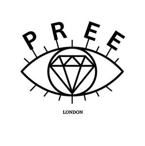

Trade Mark Journal No.2025/015 11 April 2025
UK00004177360 21 March 2025 (3,25)

- Class 3
- Cosmetics; Skincare cosmetics; Moisturisers [cosmetics]; Cosmetics and cosmetic preparations; Hair cosmetics; Skin fresheners [cosmetics]; Cosmetics for eye-lashes; Anti-aging moisturizers used as cosmetics; Cosmetics for suntanning; Organic cosmetics; Non-medicated cosmetics; Lip cosmetics; Nail cosmetics; Skin moisturizers used as cosmetics; Natural cosmetics; Mousses [cosmetics]; Cosmetics preparations; Make-up palettes containing cosmetics; Cosmetics in the form of lotions; Tanning oils [cosmetics]; Tanning gels [cosmetics]; Beauty care cosmetics; Facial creams [cosmetics]; Colour cosmetics; Cosmetics for animals; Self-tanning preparations [cosmetics]; Suncare lotions [for cosmetic use]; Eyebrow cosmetics; Tanning preparations [cosmetics]; Decorative cosmetics; Multifunctional cosmetics; Body creams [cosmetics]; Eye cosmetics; Milks [cosmetics]; After-sun oils [cosmetics]; Skin masks [cosmetics]; Cosmetics for eye-brows; Tanning milks [cosmetics]; Suntan oils [cosmetics]; Functional cosmetics; Facial gels [cosmetics]; Skin care cosmetics; Cosmetics for children; Humectant preparations [cosmetics]; Emollient preparations [cosmetics]; Cosmetics in the form of creams; Powder compacts [cosmetics]; Sun-tanning preparations [cosmetics]; Cosmetic hair lotions; Suntanning oil [cosmetics]; After-sun milks [cosmetics]; Colour cosmetics for the skin; After-sun milk [cosmetics]; Cosmetics for use on the skin; Cosmetic moisturisers; Sunscreens [for cosmetic use]; Cosmetic creams and lotions; Bath powder [cosmetics]; Night creams [cosmetics]; Skin recovery creams [cosmetics]; Sun blocking lipsticks [cosmetics]; Body gels [cosmetics]; Cosmetics for the use on the hair; Cosmetic products in the form of aerosols for skincare; Body and facial creams [cosmetics]; Lip stains [cosmetics]; Sunscreen [for cosmetic use]; Sunscreen creams [for cosmetic use]; Body care cosmetics; Creams (Cosmetic -); Cosmetic creams; Cosmetic soaps; Cosmetics containing keratin; Cosmetics in the form of powders; Cosmetic skin fresheners; Hair care lotions [for cosmetic use]; Dyes (Cosmetic -); Cosmetic dyes; Cosmetics in the form of oils; After-sun lotions [for cosmetic use]; Beauty lotions; Cosmetics containing panthenol; Cosmetic facial lotions; Facial lotions [cosmetic]; Nail paint [cosmetics]; Cosmetic suntan lotions; Colour cosmetics for children; Perfume oils for the manufacture of cosmetic preparations; Skin care lotions [cosmetic]; Nail hardeners [cosmetics]; Nail tips [cosmetics]; Tissues impregnated with cosmetics; Anti-aging creams [for cosmetic use]; Sun protecting creams [cosmetics]; Cosmetic products for the shower; Nail primer [cosmetics]; Anti-ageing creams [for cosmetic use]; Smoothing emulsions [cosmetics]; Skin cleansers [cosmetic]; Liners [cosmetics] for the eyes; Perfumed powders [for cosmetic use]; Moisturising skin lotions [cosmetic]; Cosmetic creams for the skin; Skin creams [cosmetic]; Skin creams [for cosmetic use]; Body and facial gels [cosmetics]; Perfume; Perfumes; Perfume oils; Perfumery and fragrances; Amber [perfume]; Fragrances; Oils for perfumes and scents; Fragrance sachets; Musk [perfumery]; Cologne; Perfume water; Aromatics for perfumes; Room perfume sprays; Liquid perfumes; Potpourris [fragrances]; Colognes; Scents; Fragrance emitting wicks for room fragrance; Aromatics for fragrances; Perfumery; Perfumes for cardboard; Fragrance refills for non-electric room fragrance dispensers; Cedarwood perfumery; Extracts of perfumes; Eau de cologne [cologne water]; Perfumes for ceramics; Body deodorants [perfumery]; Extracts of flowers [perfumes]; Flowers (Extracts of -) [perfumes]; Extracts of flowers being perfumes; Deodorants for personal use [perfumery]; Ionone [perfumery]; Aftershave lotions; Body fragrances; Perfumeries; Fragrance preparations; Fragrances for automobiles; Perfumed potpourris; Vanilla perfumery; Household fragrances; Perfumed sachets; Room perfumes in spray form; Fragrance sachets for eye pillows; Natural oils for perfumes; Room fragrances; Perfumery products; Aftershave; Mint for perfumery; Feminine deodorant sprays; Perfumed soaps; Cologne water; Solid perfumes; Scented water for fragrancing; After-shave lotions; Peppermint oil [perfumery]; Air fragrance preparations; Perfuming sachets; Perfumed soap; Aftershave balms; Scented oils; Scented linen sprays; Synthetic perfumery; Aftershave balm; Scented sachets; Air fragrance reed diffusers; Aftershaves; Geraniol for fragrancing; Scented body lotions; Synthetic vanillin [perfumery]; Scented soaps; Perfumed powder [for cosmetic use]; Perfumed powders; Incense spray; Perfumed creams; Scented body spray; Essential oils as perfume for laundry purposes; Eau de Cologne; Eau de cologne; Suntan lotion [cosmetics]; Sachets for perfuming linen; Linen (Sachets for perfuming -); Perfumed powder; Essences for fragrancing; Eau de colognes; Scented room sprays; Fumigation preparations [perfumes]; Ethereal oils for fragrancing; Perfumed lotions [toilet preparations]; After-shave; Fragrance for household purposes; Aromatherapy lotions; After-shave balms; Eaux de Cologne; Eaux de cologne; Scented body lotions and creams; Aftershave creams; Scented fabric refresher sprays; Perfumed body lotions [toilet preparations]; Deodorant soap; Soap (Deodorant -); Fragrant sachets; Aftershave milk; Geraniol fragrancing compounds; Incense sachets; Agarwood [incense]; Roll-on deodorants [toiletries]; Natural perfumery; Perfumed water; Eau de parfum; Synthetic musk; Jasmine oil; Ambergris; Aromatic potpourris; Scented wood; Incense; Musk [natural]; Natural musk; Aromatic oils for the bath; Polish for musical instruments; Body spray; Body sprays; Body oil spray; Body sprays [non-medicated]; Body lotion; Body mist; Body powder; Body deodorants; Body wash; Body mask lotion; Body lotions; Moisture body lotion; Hair spray; Body oils; Body washes; Hair and body wash; Body scrub; Body shampoos; Body oil; Body mask powder; Body paint (cosmetic); Face and body lotions; Body cleansing foams; Body glitter; Body gels; Foot deodorant spray; Body moisturisers; Body and facial oils; Body massage oils; Body polish; Body soap; Body splash; Body cream; Body butter; Body powder (Non-medicated -); Body masks; Toning lotion, for the face, body and hands; Body oils [for cosmetic use]; Body butters; Moisturizing body lotions; Body creams; Body milk; Body oil [for cosmetic use]; Body emulsions; Body mask cream; Face and body glitter; Body talcum powder; Body scrubs; Hair styling spray; Deodorants for body care; Body and facial butters; Scented body creams; Liquid latex body paint for cosmetic purposes; Moisturising body lotion [cosmetic]; Cosmetic body mud; Face and body creams; Lotions for face and body care; Exfoliating body scrub; Body emulsions for cosmetic use; Body soufflé; Body cream for cosmetic use; Body glitters; Body paint for cosmetic purposes; Glitter in spray form for use as a cosmetics; Sparkling fluid for the body; Cosmetic body scrubs; Body scrubs [cosmetic]; Shaving sprays; Eye shadow; Eye shadows; Cosmetics in the form of eye shadow; Eyelid shadow; Eye make-up; Eye makeup; Eye cream; Eye concealers; Eye pencils; Eye liner; Under eye correctors; Eye creams; Eye gel; Eye sticks; Eye brightening correctors; Eye correction serum; Eye makeup remover; Eye make-up removers; Eye lotions; Eye gels; Gel eye masks; Cosmetic eye pencils; Eye wrinkle lotions; Eyes make-up; Cosmetic preparations for eye lashes; Cosmetic eye gels; Eye stylers; Eye make up remover; Colour cosmetics for the eyes; Skin, eye and nail care preparations; Eyes pencils; Eye compresses for cosmetic purposes; Gel eye patches for cosmetic purposes; Cosmetic creams for firming skin around eyes; Eyelash tint; Eyelid doubling makeup; Face glitter; Eyelid pencils; Make-up for the face; Make-up for the face and body; Cosmetic paste for application to the face to counteract glare; Face blusher; Eye care products, non-medicated; Patches containing sun screen and sun block for use on the skin; Eyebrow colors; Creams (Non-medicated -) for the eyes; Eyebrow mascara; Make-up preparations for the face and body; Cosmetic white face powder; Hand masks for skin care; Sun protectors for lips; Face creams; Face and body masks; Lip makeup; Eyebrow pencils; Pencils (Eyebrow -); Lip tints; Face wash [cosmetic]; Sun screen; Double eyelid tapes; Lip gloss palettes; Eyeliner; Eyelashes; Long lash mascaras; Hair mascara; Mascara; Foundation; Skin foundation; Foundation make-up; Make-up foundation; Liquid foundation; Creamy foundation; Perfumes in solid form; Concealers; Eyeshadow palettes; Eyeliners; Moisturiser; Lipstick; Makeup; Anti-ageing moisturiser; Blush; Blemish balm creams; Blush pencils; Cream foundation; Skin balms [cosmetic].
- Class 25
- Clothes; Clothing; Swaddling clothes; Baby clothes; Beach clothes; Nappy pants [clothing]; Denims [clothing]; Jackets [clothing]; Work clothes; Shorts [clothing]; Aprons [clothing]; Drawers [clothing]; Drawers as clothing; Clothes for sports; Jackets (Stuff -) [clothing]; Stuff jackets [clothing]; Clothes for sport; Linen clothing; Headbands [clothing]; Headbands for clothing; Kerchiefs [clothing]; Bottoms [clothing]; Gloves [clothing]; Gloves as clothing; Capes (clothing); Furs [clothing]; Trunks being clothing; Maternity clothing; Babies' pants [clothing]; Layettes [clothing]; Clothing layettes; Jerseys [clothing]; Clothing for leisure wear; Hoods [clothing]; Woolen clothing; Ready-to-wear clothing; Gabardines [clothing]; Clothing for babies; Bodies [clothing]; Garments for protecting clothing; Tops [clothing]; Belts [clothing]; Belts for clothing; Gussets for underwear [parts of clothing]; Playsuits [clothing]; Collars [clothing]; Pockets for clothing; Veils [clothing]; Knitwear [clothing]; Paper hats for use as clothing items; Corsets [clothing, foundation garments]; Silk clothing; Fabric belts [clothing]; Mitts [clothing]; Hats (Paper -) [clothing]; Paper hats [clothing]; Beach clothing; Braces for clothing; Belts (Money -) [clothing]; Money belts [clothing]; Chaps (clothing); Gussets for bathing suits [parts of clothing]; Ready-made clothing; Embroidered clothing; Visors [clothing]; Casual clothing; Knitted clothing; Dresses; Bridesmaid dresses; Pinafore dresses; Wedding dresses; Cocktail dresses; Collars for dresses; Jumper dresses; Leather dresses; Dresses for evening wear; Evening dresses; Dress shirts; Nurse dresses; Tennis dresses; Gowns; Shift dresses; Dress shoes; Bridal gowns; Ladies' dresses; Dress pants; Dress suits; Fancy dress costumes; Wedding gowns; Blouses; Dressing gowns; Dresses made from skins; Women's ceremonial dresses; Pleated skirts for formal kimonos (hakama); Cheongsams (Chinese gowns); Bridesmaids wear; Skirt suits; Imitation leather dresses; Christening gowns; Bodices [lingerie]; Skirts; Men's dress socks; Sundresses; Bandeaux [clothing]; Nightgowns; Pleated skirts; Dress shields; Shields (Dress -); Sleeveless jackets; Evening gowns; Frock coats; Romper suits; Skating outfits; Bridal garters; Strapless bras; Dresses for infants and toddlers; Jumpsuits; Cardigans; Petticoats; Night gowns; Caftans; Ladies wear; Leggings [trousers]; Sashes for wear; Tunics; Tuxedos; Nightdresses; Kimonos; Kaftans; Quilted jackets [clothing]; Camisoles; Maternity shirts; Ball gowns; Bathing costumes for women; Fashion hats; Wedding garters; Underskirts; Foulards [clothing articles]; Gussets for leotards [parts of clothing]; Capelets; Sleeved jackets; Jogging outfits; Sleeveless jerseys; Shoes for casual wear; Costumes; Boas [clothing]; Bra straps [parts of clothing]; Swimsuits; Trainers; Trainers [footwear]; Training shoes; Training suits; Gym boots; Boxing shoes; Athletic shoes; Gym shorts; Gym suits; Yoga shoes; Referees uniforms; Sport shoes; Heels; High-heeled shoes; Heel pieces for shoes; Tongues for shoes and boots; Heel protectors for shoes; Insoles for shoes and boots; Shoes; Ankle boots; Sandals; Pullstraps for shoes and boots; Hidden heel shoes; Sandals and beach shoes; Stockings (Heel pieces for -); Heel pieces for stockings; Boots; Spiked running shoes; Slip-on shoes; Esparto shoes or sandals; Booties; Shoes for foot volleyball; Foot volleyball shoes; Walking boots; Walking shoes; Toe socks; Thong sandals; Shoe soles; Lace boots; Flat shoes; Pedicure sandals; Pumps [footwear]; Platform shoes; Wedge sneakers; Fittings of metal for boots and shoes; Esparto shoes or sandles; Dance shoes; Ballet shoes; Tap shoes; Footwear soles; Soles for footwear; Toe straps for Japanese style sandals [zori]; Running shoes; Leather shoes; Men's sandals; Sneakers [footwear]; Rubber shoes; Women's shoes; Jogging shoes; Sneakers; Slipper soles; Riding shoes; Wooden shoes [footwear]; Shoes soles for repair; Beach shoes; Studs for football shoes; Ankle socks; Head wear; Rain shoes; Wellington boots; Shoe straps; Riding boots; Flip-flops for use as footwear; Climbing boots; Roller shoes; Studs for football boots; Football boots (Studs for -); Volleyball shoes; Winter boots; Aqua shoes; Apres-ski shoes; Soles for japanese style sandals; Knee-high stockings; Nursing shoes; Baby boots; Athletics shoes; Hiking shoes; Work shoes; Heelpieces for footwear; Embossed heels of rubber or of plastic materials; Wooden shoes; Snow boots; Welts for footwear; Footwear (Welts for -); Anklets [socks]; Bath sandals; Protective metal members for shoes and boots; Climbing boots [mountaineering boots]; Deck shoes; Baby sandals; Tennis shoes; Baby shoes; Insoles for footwear; Infants' boots; Driving shoes; Basketball shoes; After ski boots; Rain boots; Jogging pants; Yoga pants; Exercise wear; Boxing shorts; Yoga shirts; Gymwear; Gymnastic shoes; Tennis sweatbands; Yoga socks; Clothing for gymnastics; Maternity dresses; Formalwear; Formal evening wear; Swim wear for gentlemen and ladies; Evening wear; Eye masks; Face mask [clothing] ; Pyjamas; Pajamas; Pyjamas [from tricot only]; Baby doll pyjamas; Nightwear; Knitted underwear; Teddies [undergarments]; Trousers; Nighties; Bed socks; Underpants; Nightshirts; Trousers shorts; Housecoats; Underwear; Corduroy trousers; Sweatpants; Teddies [underclothing]; Sleep shirts; Boy shorts [underwear]; Sleep pants; Pajamas (Am.); Trousers for children; Bed jackets; Briefs [underwear]; Underpants for babies; Tracksuits; Maternity underwear; Tracksuit bottoms; Pajama bottoms; Slippers; Lounging robes; Knickers; Woollen socks; Underclothes; Teddies; Tracksuit tops; Bootees (woollen baby shoes); Dungarees; Trousers for sweating; Sleepwear; Bath slippers; Woollen tights; Sweat-absorbent underwear; Waterproof trousers; Lounge pants; Trouser socks; Sleepsuits; Sweat-absorbent underclothing [underwear]; Fleece shorts; Sleeping garments; Negligees; Babies' pants [underwear]; Maternity sleepwear; Corduroy shirts; Loungewear; Corduroy pants; Men's underwear; Maternity shorts; Pinafores; Shoes for leisurewear; Short-sleeved shirts; Night shirts; Long-sleeved shirts; Short-sleeved T-shirts; Underwear (Anti-sweat -); Anti-sweat underwear; Trunks [underwear]; Socks and stockings; Turtleneck shirts; Open-necked shirts; Maternity pants; Knitted baby shoes; Golf trousers; Casual trousers; Slipper socks; Hooded bathrobes; Disposable underwear; Nightcaps; Waistcoats; Undershirts for kimonos (juban); Trousers of leather; Thermal underwear; Rain trousers; Bib shorts; Bras; Straps for bras; Bra extenders; Bra strap extenders; Strapless brassieres; Fitted swimming costumes with bra cups; Adhesive bras; Sports bras; Lingerie; Bralettes; Panties; Slips [undergarments]; Corsets [underclothing]; Snowboard boots; Hiking boots; Waterproof boots; Ski boots.
India Jacobs